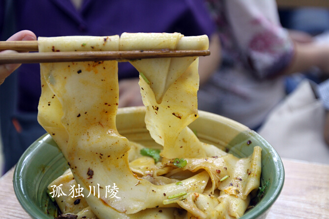

浏览数：
392
- 故事
- 美食点评
- 评论
- 吃货分享
-
有一天秦宫内载歌载舞、锣鼓喧天，欢庆战争取得胜利。秦始皇却在宫中愁眉不展闷闷不乐，为国家还不安宁，不时要受匈奴的外族入侵，还为筹划修筑万里长城之事劳累过度，平日又是日里万机，龙体受病卧榻不起，御膳房做出各种山珍海味，始皇连看都懒得看一眼。这样一来，急坏了宫内所有宦官，他们像热锅上的蚂蚁，纷纷想方设法，其中一名宦官灵机一动，竟跑到集市上给皇上端来一碗biang biang 面，秦始皇一闻到这浓烈的辣子、葱味，就胃口大开了，端起来一顿猛嚼。不想一吃大发而不可收拾，大声赞叹：民间竟有比山珍海味还香的食物！忙问这是何物？答曰：biang biang 面。Biang biang 面还成为秦始皇御宴必备品...
-
忘记了从什么时候开始，乱码乱码各种风哇乏味发我if和哇哦发哈我粉红色的话费送咖啡酒文化苏杭覅uwebfwajfbfawfwafhwafawefwf风哇风哇发和瓦房哈维凤凰卡违法哇科副教授级回复将开发为...
-
1.色
看起来跟烧焦了一样，不好看啊
2.香
闻起来还凑合
3.味
yummy, 我在大城市这么多年，吃尽各种美食，从来没体验过这么好吃的东西...
-
没有词汇可以形容的美食，真好吃
-
我在 杠子裤带面吃到 裤带面

评论
楼下是SB啊，我才是正宗的吃货，我个人看来，羊肉泡馍更好吃！
搭配各种臊子，裤带面可以变化出各种不一样的风味搭配各种臊子，裤带面可以变化出各种不一样的风味搭配各种臊子，裤带面可以变化出各种不一样的风味搭配各种臊子，裤带面可以变化出各种不一样的风味搭配各种臊子，裤带面可以变化出各种不一样的风味